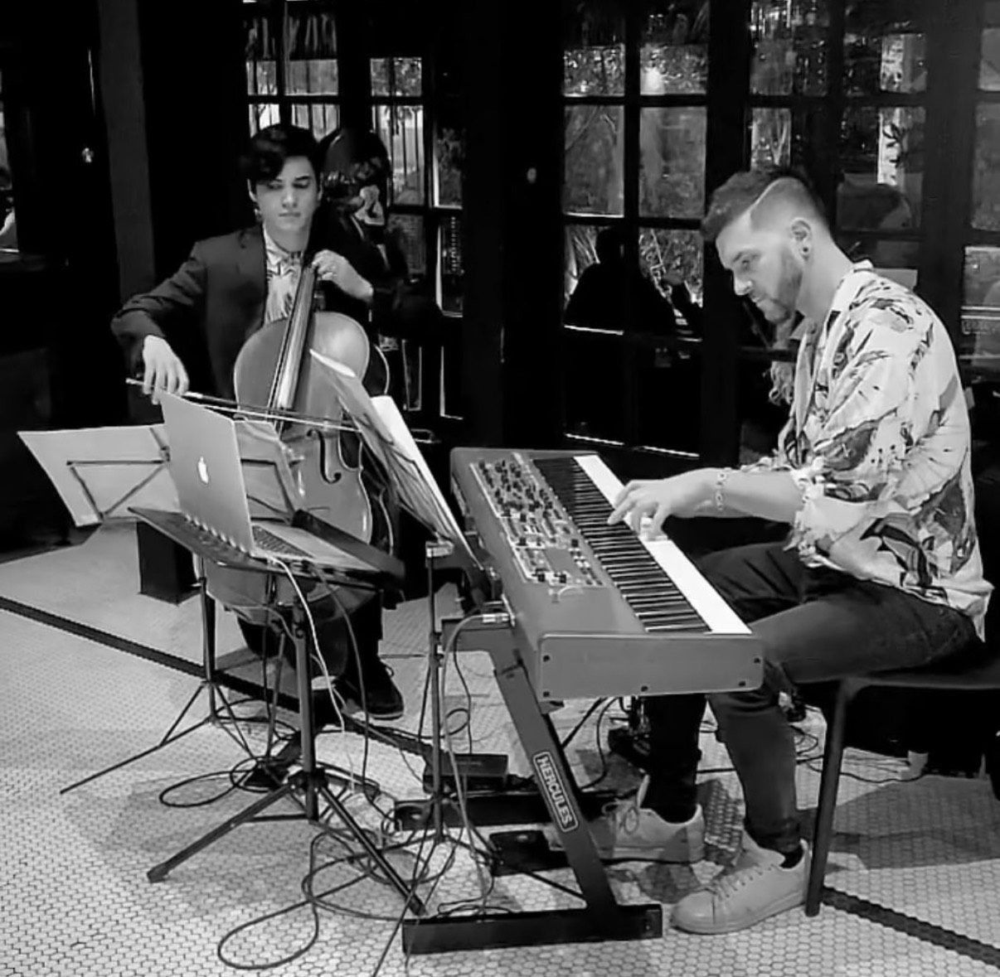

Dúo PianyCello
Desde Bach y Piazzolla hasta el folclor, el rock y el pop, el Dúo PianyCello crea arreglos propios para piano y cello. También explora una faceta electrónica, combinando bases con la interpretación en vivo de ambos instrumentos.
Fotos y videos
